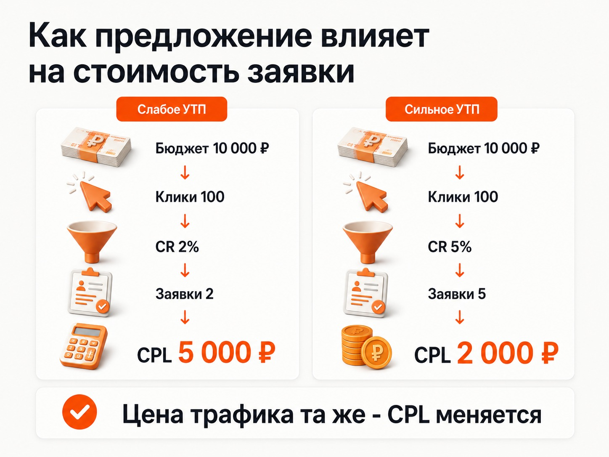
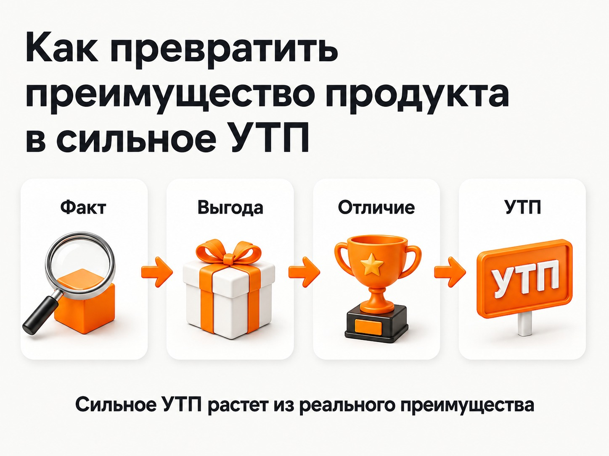
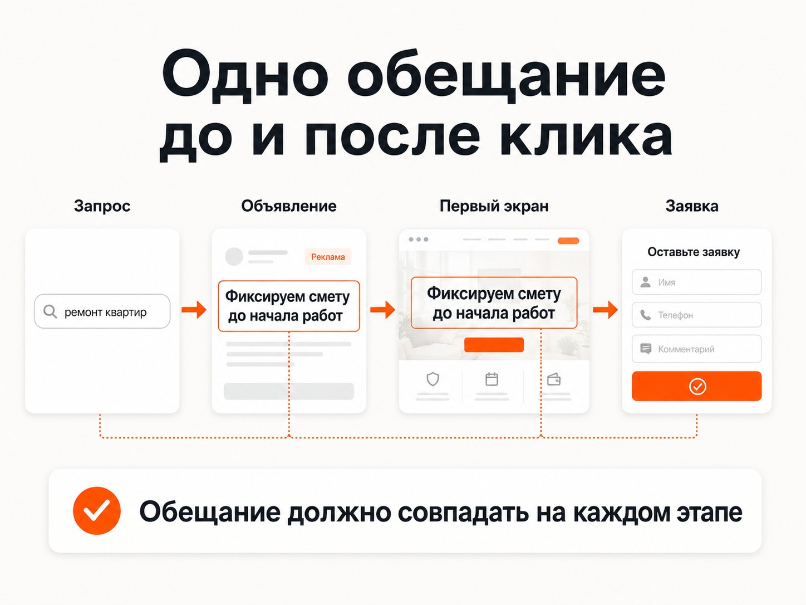

Блог о платном трафике
УТП в маркетинге: что это и как составить сильное предложение
УТП в маркетинге - это уникальное торговое предложение, то есть понятная причина, почему клиенту стоит выбрать конкретный товар, услугу или компанию среди альтернатив.
Хорошее УТП отвечает на простой вопрос покупателя: «Почему мне стоит обратиться именно сюда?»
Фразы вроде «высокое качество», «индивидуальный подход», «доступные цены» или «профессиональная команда» этот вопрос обычно не закрывают. Их может написать практически любой конкурент.
Для рекламы это особенно критично. Можно правильно настроить Яндекс Директ, подобрать целевые запросы и привести на сайт нужных людей, но слабое предложение ухудшит результат всей связки. Пользователь увидит такое же объявление, как у остальных, реже кликнет, а после перехода не найдет достаточной причины оставить заявку.
Что такое УТП простыми словами
Представим, что человек ищет компанию по ремонту квартир и видит несколько похожих предложений:
- ремонт квартир под ключ;
- качественный ремонт по доступной цене;
- ремонт любой сложности;
- индивидуальный подход к каждому клиенту.
Формулировки разные, но смысл практически одинаковый. Выбрать между компаниями по ним невозможно.
Теперь появляется предложение:
«Фиксируем смету до начала ремонта. Любые дополнительные работы согласовываем отдельно».
Если компания действительно работает так, у клиента появляется конкретная причина обратить на нее внимание. Предложение снимает понятный страх - что первоначальная цена в процессе ремонта неожиданно вырастет.
Именно в этом практический смысл УТП.
При этом уникальность не обязательно означает изобретение характеристики, которой физически нет больше ни у одной компании на рынке. Часто достаточно найти существенное для клиента преимущество, которое конкуренты не предлагают или не умеют нормально объяснить.
УТП, оффер и слоган - в чем разница
Эти понятия часто смешивают.
| Элемент | Что делает | Пример |
|---|---|---|
| УТП | Объясняет причину выбрать компанию или продукт | «Фиксируем стоимость ремонта до начала работ» |
| Оффер | Предлагает конкретные условия покупки | «Замер бесплатно при заказе кухни» |
| Слоган | Помогает запомнить бренд | Короткая имиджевая фраза |
Оффер может быть временным: скидка, подарок, бесплатная доставка, специальная комплектация.
УТП обычно связано с самим продуктом, сервисом, технологией, специализацией или моделью работы бизнеса.
На практике они могут пересекаться. Сильный оффер способен стать главным рекламным сообщением, особенно если именно его условия заметно отличаются от рынка.
Почему слабое УТП делает рекламу дороже
Рекламную кампанию часто пытаются исправить исключительно внутри рекламного кабинета: меняют ставки, запросы, аудитории, стратегии и объявления.
Но реклама приводит человека к предложению бизнеса. Если предложение проигрывает конкурентам, настройками эту проблему полностью не решить.
УТП влияет сразу на несколько участков рекламной воронки.
CTR объявления
На поиске человек обычно видит рядом несколько рекламодателей.
Если объявления выглядят примерно так:
«Купить пластиковые окна» «Пластиковые окна по выгодной цене» «Качественные окна с установкой»
пользователю приходится искать различия самостоятельно.
Конкретное предложение дает дополнительную причину выбрать объявление. Например:
«Окна с монтажом. Фиксируем стоимость после замера»
Разница особенно заметна в конкурентных нишах, где большинство рекламодателей используют одни и те же общие преимущества.
При этом высокий CTR сам по себе не является целью бизнеса. Объявление должно привлекать подходящих клиентов, а не максимальное количество любопытных пользователей.
Подробнее - Какой CTR считается хорошим в Яндекс Директ: поиск, РСЯ и wCTR.
Конверсия посадочной страницы
После клика проблема никуда не исчезает.
На первом экране сайта пользователь снова пытается понять:
- что здесь предлагают;
- подходит ли предложение именно ему;
- чем эта компания отличается;
- почему стоит оставить заявку сейчас;
- можно ли верить заявленным преимуществам.
Если вместо ответа он видит «Мы команда профессионалов с многолетним опытом», часть платного трафика просто уходит обратно в поиск.
Поэтому сильное рекламное объявление со слабой посадочной страницей тоже работает плохо.
На сайте уже разобраны примеры первых экранов и элементов, которые помогают объяснять предложение и повышать доверие.
Подробнее - Примеры продающих сайтов: оффер, доверие и конверсия.
Стоимость заявки
В конечном счете слабое предложение отражается на CPL или CPA.
Допустим, это условный пример:
100 кликов стоят 10 000 рублей.
Если сайт получает 2 заявки, стоимость одной составит 5 000 рублей.
Если при том же трафике после изменения предложения конверсия вырастет до 5 заявок, стоимость заявки снизится до 2 000 рублей.
Рекламные клики при этом не стали дешевле. Изменилась эффективность трафика после перехода на сайт.
Поэтому высокая стоимость заявки далеко не всегда означает, что Яндекс Директ покупает слишком дорогие клики.
Подробнее - CPA в Яндекс Директе: что это и как считать.
Подробнее - Почему Яндекс Директ не дает заявки и лиды: где искать проблему.

УТП влияет и на качество лидов
Сильное предложение должно привлекать нужного клиента, а не любого человека, готового заполнить форму.
Допустим, компания поставляет продукцию только оптом.
Фраза:
«Купить упаковку от производителя»
может заинтересовать и розничных покупателей.
Фраза:
«Оптовые поставки упаковки партиями от 5 000 штук»
сразу отсекает часть неподходящей аудитории.
CTR такого объявления теоретически может даже снизиться. Для бизнеса это не обязательно плохо. Если среди заявок становится больше реальных оптовых покупателей, реклама работает лучше.
Поэтому УТП нужно оценивать по всей цепочке:
показ -> клик -> заявка -> квалифицированный лид -> продажа.
Количество заявок без оценки их качества может создавать ложное впечатление хорошей рекламы.
Что можно использовать как основу для УТП
Не нужно пытаться придумать эффектный рекламный лозунг из воздуха. Сначала стоит найти реальное преимущество бизнеса.
Основой предложения могут стать:
- специализация на конкретной задаче или аудитории;
- срок выполнения работы;
- технология или метод;
- комплектация продукта;
- условия поставки;
- гарантия;
- снижение определенного риска клиента;
- удобный формат обслуживания;
- наличие товара;
- сервис после покупки;
- прозрачная модель цены;
- подтвержденный результат;
- сочетание нескольких характеристик, которое редко встречается у конкурентов.
Например, сама характеристика «собственное производство» еще мало что дает покупателю.
Нужно понять ее следствие.
Если собственное производство позволяет изготовить нестандартный размер без посредников, ценность может быть именно в этом.
Если оно позволяет быстрее выпускать заказ, предложение должно говорить о сроке.
Если никакой заметной выгоды клиент не получает, писать «собственное производство» крупным заголовком бессмысленно.
Примеры слабых и сильных УТП
Примеры ниже условные. Использовать такие обещания можно только в том случае, если бизнес действительно способен их выполнять.
Ремонт квартир
Слабый вариант:
«Качественный ремонт квартир под ключ».
Более сильный:
«Фиксируем смету до начала ремонта. Дополнительные работы - только после согласования».
Во втором варианте появляется конкретный смысл для клиента.
Поставка оборудования
Слабый вариант:
«Надежное промышленное оборудование по выгодным ценам».
Более сильный:
«Подберем оборудование под ваши параметры и подготовим технический расчет до покупки».
Компания продает тот же продукт, но объясняет дополнительную ценность своей работы.
Стоматология
Слабый вариант:
«Современная стоматология с опытными врачами».
Более сильный вариант должен зависеть от реальной специализации клиники. Например:
«Лечение сложных случаев прикуса одной командой специалистов».
Здесь уже появляется конкретная аудитория и причина изучить предложение подробнее.
Доставка
Слабый вариант:
«Быстрая доставка по городу».
Если бизнес действительно способен гарантировать конкретный срок, намного понятнее:
«Доставим заказ в течение двух часов».
Слово «быстро» каждый покупатель трактует по-своему. Два часа - конкретное условие.
Как составить сильное УТП
1. Определите, кому именно продаете
Одна из главных ошибок - пытаться составить предложение сразу для всех.
Даже один продукт разные покупатели могут выбирать по разным причинам.
Для частного клиента при выборе оборудования может быть важна простота эксплуатации. Для предприятия - производительность, обслуживание и наличие запчастей. Для дилера - маржинальность и условия поставки.
Когда аудитории сильно отличаются, им могут потребоваться разные рекламные сообщения и посадочные страницы.
2. Выпишите реальные преимущества продукта
Сначала без красивых формулировок.
Что компания действительно делает иначе?
Почему существующие клиенты выбирают ее?
Какие условия сложно получить у конкурентов?
Что снижает риск покупателя?
Что экономит ему время, деньги или работу?
Какая особенность продукта решает существенную проблему?
На этом этапе нужны факты, а не рекламные прилагательные.
3. Посмотрите предложения конкурентов
Полезно собрать объявления и первые экраны сайтов основных конкурентов.
Если практически все пишут:
- высокое качество;
- выгодные цены;
- большой опыт;
- профессиональная команда;
- индивидуальный подход,
использовать те же слова в качестве главного аргумента нет смысла.
Задача анализа - увидеть, чем рынок уже переполнен и какие значимые потребности покупателей остаются плохо раскрыты.
4. Переведите характеристику в выгоду клиента
У бизнеса есть характеристика:
«Склад 2 000 м²».
Покупателю сама площадь склада может быть безразлична.
Но если за этим стоит постоянное наличие основной продукции, предложение уже можно строить вокруг наличия и быстрой отгрузки.
Еще пример:
«15 лет на рынке».
Это скорее доказательство опыта, чем самостоятельное УТП.
Если за 15 лет компания сформировала редкую экспертизу в конкретном типе проектов, сильнее говорить именно о специализации, а срок работы использовать как подтверждение.
5. Оставьте один главный аргумент
Первый экран сайта часто пытаются превратить в каталог преимуществ:
«Быстро, качественно, недорого, с гарантией, профессионально и индивидуально».
После такого списка непонятно, что в предложении главное.
Лучше выбрать сильнейшую причину обращения, а остальные преимущества раскрыть ниже на странице.
6. Добавьте конкретику
Сравните:
«Быстро изготовим мебель».
и
«Изготовление кухни от 20 рабочих дней».
Вторая формулировка значительно конкретнее. Но срок имеет смысл указывать только тогда, когда компания действительно способна его соблюдать.
То же относится к ценам, гарантиям, экономии, результатам и любым цифрам.
7. Проверьте, можно ли подтвердить обещание
Сильное заявление без доказательств быстро превращается в рекламный шум.
Если компания обещает фиксированную цену, нужно объяснить условия фиксации.
Если говорит о гарантии, пользователь должен понимать, что именно гарантируется.
Если заявляет редкую специализацию, ее желательно подтвердить проектами, кейсами, специалистами или другими фактами.
УТП привлекает внимание. Доказательства превращают обещание в аргумент.

УТП в объявлении и на посадочной странице должно совпадать
Одна из частых ошибок рекламной связки - сильное предложение существует только в объявлении.
Например, реклама обещает:
«Проект кухни бесплатно при заказе».
Пользователь переходит на сайт, а на первом экране видит:
«Создаем кухни вашей мечты с 2010 года».
Информацию о бесплатном проекте приходится искать где-то дальше.
Получается разрыв ожиданий.
Если конкретное предложение заставило человека нажать на рекламу, посадочная страница должна сразу подтвердить его.
Нормальная цепочка выглядит так:
поисковый запрос -> рекламное сообщение -> первый экран -> доказательства -> заявка.
Человек на каждом этапе должен видеть продолжение одной и той же мысли.

Как проверить, работает ли новое УТП
Оценивать предложение по принципу «мне нравится» или «звучит красиво» бесполезно.
Лучший способ - проверить его на реальном трафике.
Можно сравнивать разные рекламные сообщения и варианты посадочной страницы, отслеживая:
- CTR;
- конверсию сайта;
- количество заявок;
- стоимость заявки;
- качество лидов;
- продажи, если данных достаточно.
При этом нельзя делать вывод по нескольким случайным кликам или одной заявке. Чем меньше данных, тем сильнее результат зависит от случайности.
Особенно внимательно нужно смотреть на качество обращений. Иногда формулировка дает больше заявок, но привлекает аудиторию, которая плохо покупает.
Подробнее - Конверсия в Яндекс Директ: что это, как считать CR и оценивать рекламу.
Когда проблема не в УТП
Слабое предложение способно сильно ухудшить рекламу, но списывать на него любой плохой результат тоже неправильно.
Заявок может не быть из-за:
- нецелевых поисковых запросов;
- плохих площадок РСЯ;
- неверно выбранной аудитории;
- технических проблем сайта;
- неудобной формы;
- высокой цены относительно рынка;
- отсутствия доверия;
- неправильных целей рекламной кампании;
- ошибок аналитики.
Причину нужно искать по всей воронке.
Если на сайт приходит нерелевантный трафик, новое УТП его не исправит.
Если целевые пользователи активно переходят по рекламе, изучают предложение, но почти не оставляют заявки, сайт и само предложение уже становятся одними из первых кандидатов на проверку.
Подробнее - Яндекс Директ сливает бюджет: почему реклама не окупается.
УТП не исправит слабый продукт
У рекламы есть предел возможностей.
Она может показать предложение нужному человеку, объяснить его преимущества и привести пользователя на сайт. Но реклама не способна сделать объективно слабый товар привлекательнее сильных альтернатив.
Я сталкивался с этим и в рекламных проектах: внутри одной ниши разные продукты при похожем трафике могут давать совершенно разную стоимость обращения именно из-за различий в самом предложении.
Например, в кейсе с продажей нескольких ЖК часть объектов стабильно получала обращения дешевле других. Один объект заметно уступал остальным по привлекательности и плохо конвертировал не только в рекламе. Настройками кампаний такую разницу полностью убрать невозможно.
Подробнее - Продажа студий в Москве: заявки по 528₽ - кейс Яндекс Директ.
Это полезная диагностика для бизнеса. Если проблема повторяется в разных источниках трафика, стоит проверить уже не рекламную кампанию, а продукт, цену, условия покупки и само предложение.
Что в итоге
УТП в маркетинге - это конкретная причина выбрать ваш продукт среди альтернатив.
Сильное предложение строится не вокруг красивых слов, а вокруг реальной ценности для клиента: результата, условий, специализации, снижения риска или другого существенного преимущества.
В платной рекламе это напрямую связано с экономикой. УТП помогает объявлению выделиться среди конкурентов, формирует ожидание перед переходом и дает человеку причину оставить заявку на посадочной странице.
Поэтому при дорогих заявках имеет смысл проверять не только настройки Яндекс Директа. Иногда кампания нормально приводит нужную аудиторию, а основные потери начинаются уже в самом предложении бизнеса.